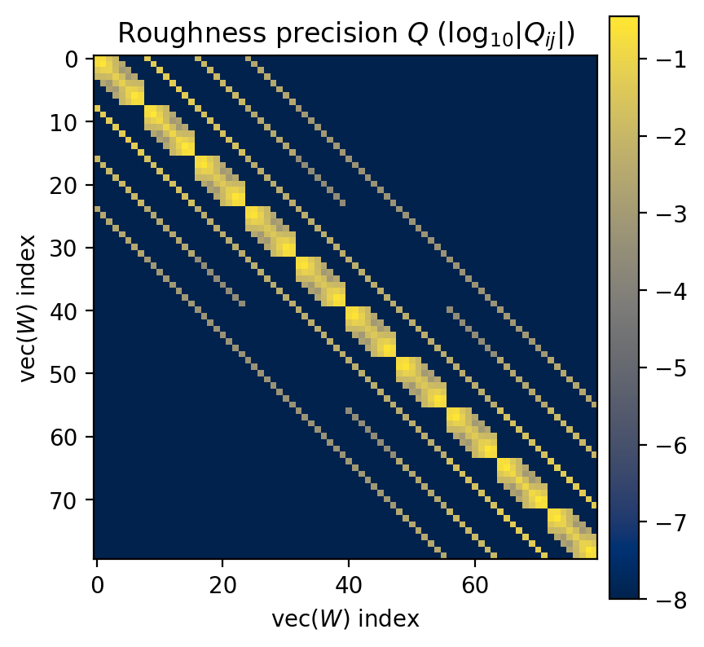
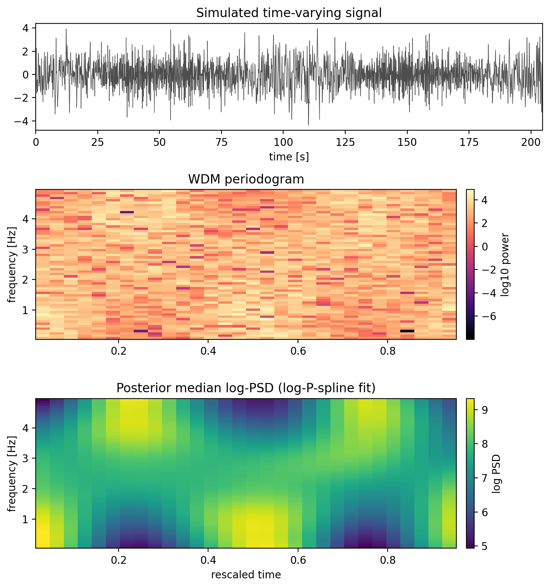
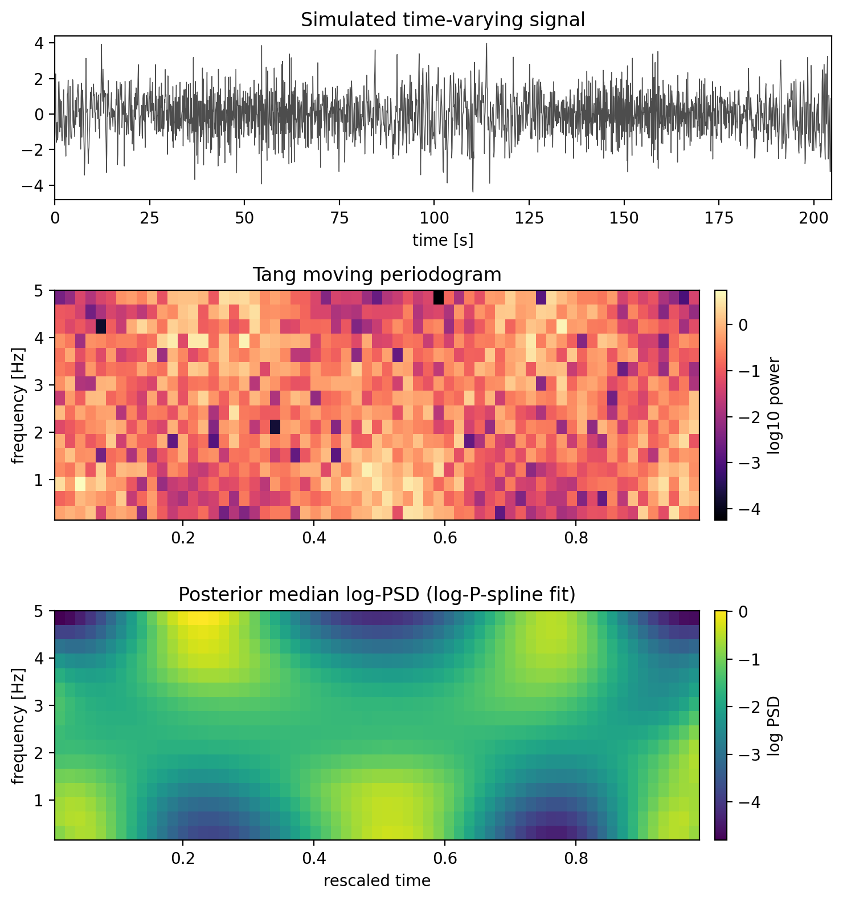

Time-varying PSD estimation#
Most of this package estimates a single, stationary PSD from a whole time
series. Real signals are often not stationary: the spectrum itself drifts
over time (a chirp, a changing noise floor, a resonance that turns on and
off). This page shows how log_psplines estimates a time-varying PSD
\(S(t, f)\) from a time-frequency transform of the series, using the same
log-P-spline machinery as the stationary case, just with a two-dimensional
spline surface instead of a one-dimensional curve.
Two time-frequency transforms feed the same model:
a wavelet-domain (WDM) transform, which evaluates a coefficient at every retained time and frequency cell (
preprocessing/wdm.py, optionalwdm-transformdependency), andthe Tang zig-zag moving periodogram, which slides a window over the series and cycles through frequencies in a zig-zag pattern, so it spends one observation per window rather than a full grid (
preprocessing/moving_periodogram.py, no extra dependency).
See Moving periodogram versus WDM for a
visual comparison of how the two transforms spend their observations.
Both produce a rectangular PowerSpectrum with time and frequency axes,
so both fit through the same scalar time-frequency fit() entry point.
Scalar time-frequency fitting runs through the existing fit() entry point.
It uses LogPSpline, with the same SplineBasis type for time and
frequency, and returns a PSDResult. No separate TV model hierarchy or
second pipeline was added; the stationary Wishart/VI/blocked-NUTS path is
unchanged.
The model#
Both transforms turn a real time series into a grid of coefficients \(w_{t,f}\), one per retained time bin \(t\) and frequency bin \(f\) (WDM fills the full grid; the moving periodogram fills it one zig-zag rung per window). Each coefficient behaves like a zero-mean Gaussian whose variance is the local PSD, so \(w_{t,f}^2\) is a noisy time-frequency power estimate — the time-varying analogue of an ordinary periodogram ordinate.
log_psplines models the log-PSD surface as a tensor-product B-spline:
where \(\mathbf{B}_t\) and \(\mathbf{B}_f\) are B-spline bases on the (rescaled)
time and frequency axes and \(\mathbf{W} \in \mathbb{R}^{K_t \times K_f}\) is a
matrix of spline weights. This is exactly LogPSpline.__call__ with a time
basis supplied; the stationary 1-D case is the same call with time=None.
Smoothness is controlled by a Gaussian prior on \(\mathbf{W}\) with precision
where \(\mathbf{Q}_t\) and \(\mathbf{Q}_f\) are the usual integrated-squared- second-derivative roughness penalties for the time and frequency bases, and \(\phi_t, \phi_f\) are smoothing precisions with their own Gamma priors, sampled jointly with \(\mathbf{W}\) under NUTS. Large \(\phi_t\) penalizes wiggliness across time; large \(\phi_f\) penalizes wiggliness across frequency. \(Q\) is a Kronecker sum, so it is block-structured: each frequency column of \(\mathbf{W}\) is penalized along time by \(\mathbf{Q}_t\), and each time row is independently penalized along frequency by \(\mathbf{Q}_f\).
{kind=link}

The banded, repeating block pattern is the Kronecker sum: the fine diagonal bands come from \(\mathbf{Q}_t\) (smoothing along time within each frequency block) and the coarser off-diagonal bands come from \(\mathbf{Q}_f\) (smoothing along frequency, coupling equivalent time indices across blocks).
Demo: a drifting spectral peak#
The example below simulates a non-stationary MA(1) process whose moving-
average coefficient oscillates in time (the LS2 test case from Tang et al.),
so its spectral peak drifts back and forth. It fits the same series twice —
once from the WDM periodogram, once from the Tang moving periodogram — with
LogPSpline + fit(), and reads off the posterior median log-PSD surface
each time.
import numpy as np
from log_psplines import (
TimeSeries, SplineBasis, LogPSpline, PowerSplineConfig, fit,
)
from log_psplines.preprocessing.wdm import wdm_periodogram
from log_psplines.preprocessing.moving_periodogram import moving_periodogram
# A non-stationary MA(1): the coefficient oscillates, so the spectral
# peak drifts over time.
rng = np.random.default_rng(4)
n = 2048
noise = rng.normal(size=n + 2)
time = np.arange(n) / n
coefficient = 1.1 * np.cos(1.5 - np.cos(4 * np.pi * time))
values = noise[1 : n + 1] + coefficient * noise[:n]
series = TimeSeries(data=values, t=np.arange(n) * 0.1)
def fit_surface(data):
model = LogPSpline(
frequency=SplineBasis.from_grid(data.frequency / data.frequency[-1], 4),
time=SplineBasis.from_grid(data.time, 4),
)
return fit(data, PowerSplineConfig(), model=model)
wdm_data = wdm_periodogram(series, nt=32)
wdm_result = fit_surface(wdm_data)
mp_data = moving_periodogram(values, dt=0.1, m=16, thin=2)
mp_result = fit_surface(mp_data)
# each result.psd: (chain, draw, time, frequency)
wdm_result.save("output/wdm")
mp_result.save("output/moving_periodogram")
{kind=link}

{kind=link}

From top to bottom in each figure: the simulated series, the raw periodogram (a full WDM grid, or the Tang zig-zag’s per-window ordinates pooled into rectangular cells), and the posterior median of the fitted log-PSD surface. In both cases the spline surface smooths out the periodogram’s cell-to-cell noise while still tracking the peak’s drift across time — the same bias/variance trade-off that log-P-splines make in the stationary case, now in two dimensions. The WDM grid fills every time-frequency cell, whereas the moving periodogram visits one frequency rung per window, so its raw panel is noisier for a comparable number of retained cells; the fitted surfaces are nonetheless comparable because both feed the same tensor-spline model.
The full script that generates all three figures is
docs/studies/time_varying_psd_demo.py.
What moved#
WDM responsibility |
Destination |
|---|---|
Clamped B-splines and trace-normalized roughness |
|
Tensor surface evaluation |
|
Eigen prior, Gamma precision sampling, centered/non-centered coefficients and least-squares start |
|
Power/count likelihood |
|
Observations and exact real-component counts |
|
Transform and boundary trimming |
|
Coefficients, basis grids, posterior samples, diagnostics and persistence |
|
PowerSplineConfig contains the power-likelihood prior and NUTS settings. It
is distinct from the historical stationary configuration because the two
priors have different normalization and hyperparameters. The caller supplies
the scalar model explicitly, so knot selection stays outside inference.
Install the optional transform with pip install -e '.[wdm]'. Already prepared
powers/counts require no WDM dependency. Time is rescaled by full series
duration. Output values retain WDM coefficient-variance units; they are
not silently converted to PSD/Hz. Full surface draws are reconstructed on
request. Stored results contain compact coefficients and both basis
matrices, not a surface per MCMC step.
The remaining sections are implementation and validation notes for contributors; they are not required to use the model above.
Scientific conventions#
WDM bases use trace-normalized, unregularized marginal penalties. Historical stationary
from_knotsuses maximum-entry normalization plus a ridge. These conventions are intentionally distinct. Usefrom_gridfor source WDM parity; substituting a stationary penalty changes the prior.The smoothing precisions retain
Gamma(shape=2, rate=1)priors, sampled on the log scale with the original Jacobian correction. Posteriorphi_timeandphi_freqsites contain log precision. The joint null space has its original weak proper prior (null_precision=1e-4,ridge_eps=1e-6).One real WDM coefficient contributes
(power=w**2, count=1). A complex Fourier ordinate in the stationary convention would require(power=2*FFT_power/duration, count=2). The half factor is intentional.Missing cells have both zero power and zero count. Source log-linear filling is used only for initialization; it never replaces likelihood observations.
Pooling must sum original powers and exact retained counts. Adaptive bin selection and coarse-graining adapters have not yet been transferred.
Validation and scope#
tests/reference/capture_ls2.py extracts the original source functions and
records their hashes. The source working tree has unrelated uncommitted work;
it was read, not modified. The fixtures are generated under this package’s
JAX/NumPyro environment, isolating code changes from dependency-version changes.
Tests need neither the sibling checkout nor its pipeline. The optional
transform parity test needs wdm-transform.
The fixed-seed LS2 case has 512 samples, dt=0.1, nt=32, four interior knots per axis, 24 warmup steps and 16 retained draws. Both centered and non-centered paths compare bases, penalties, preprocessing, initial sites, posterior target, gradients, draws, reconstructed PSDs and sampler diagnostics against source. NetCDF round trips and plot generation are also checked. Run:
.venv/bin/python -m pytest tests/test_power_inference.py -q
.venv/bin/python docs/studies/ls2_transfer.py
The second command writes comparisons under tests/test_output/ls2_transfer.
These are short numerical integration checks, not convergence, coverage or
LS2 recovery claims. A larger matched campaign remains a separate validation.
The moving-periodogram adapter is available from
log_psplines.preprocessing.moving_periodogram. It follows the Tang
zig-zag frequencies and no-padding/whole-block boundary convention used in
the companion implementation. tang_moving_periodogram returns the exact
scattered complex ordinates, while moving_periodogram pools them into the
rectangular PowerSpectrum contract used by fit. The rectangular
adapter represents each retained time block by its pooled centre; use the raw
function when per-ordinate scattered coordinates are required.
Not yet transferred: moving-periodogram scattered-coordinate inference,
STFT adapters, adaptive knots and
binning, fixed-reference residual models, alternate exploratory hyperpriors,
TV VI, large-grid chunked summaries, or multivariate TV inference. Scalar
surface outputs already compose with SpectralMatrix; its trailing matrix
axes require no new TV matrix class.
Recorded comparison#
The 24/16 reference and port agree to about 7e-15 maximum relative PSD
difference. Both reproduce the same deliberately short-chain problems:
16/16 depth-limit hits for non-centered sampling and four divergences for
centered sampling. Those are not silently treated as successful inference.
A second paired run used 200 warmup steps, 100 draws and maximum tree depth 8,
with the same data, basis and seed. Both parameterizations had zero divergences
and zero depth-limit hits in both implementations. Maximum relative PSD
variation between source and port was 7.11e-15 (non-centered) and 7.22e-15
(centered). This remains a single-realization numerical comparison.
To reproduce that longer check without overwriting the test fixtures:
.venv/bin/python tests/reference/capture_ls2.py /path/to/wdm_psd \
--warmup 200 --draws 100 --max-tree-depth 8 --output /tmp/ls2-reference
.venv/bin/python docs/studies/ls2_transfer.py \
--reference /tmp/ls2-reference/ls2_wdm.npz \
--output tests/test_output/ls2_transfer_long
The final full package suite passed with 85 tests and 3 existing skips,
including the stationary frozen-reference tests. Targeted Ruff checks and
git diff --check passed. The optional WDM adapter was exercised with
wdm-transform==0.5.0 installed in the package’s .venv.
Maintenance cleanup#
Both fit paths now share the NUTS execution helper and the public
get_psd_dataset reconstruction contract. Reporting moved out of PSDResult,
which retains data access, persistence and a small save convenience method.
The stationary stages no longer inherit unused generic stage classes.
See architecture.md for the configuration and storage changes.
docs/studies/ls2_validation.py adds a bounded three-realization check with
two centered chains per realization. It compares pointwise intervals to an
independent 512-realization WDM-power Monte Carlo reference in native variance
units. Its results are descriptive; this is not a calibrated coverage study.